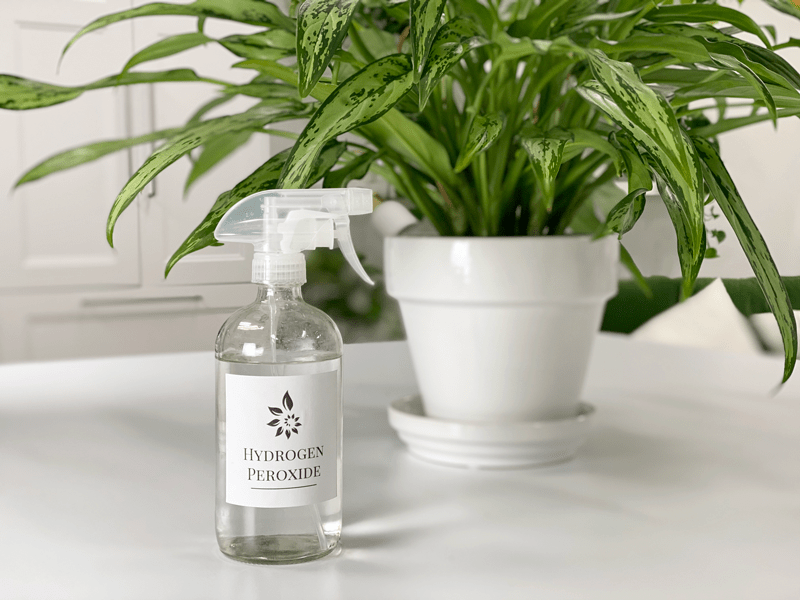

3% Hydrogen Peroxide Solution | Pest and Soil Treatment
Hydrogen peroxide is an environmentally friendly alternative to pesticides, fungicides, and chemical fertilizers. Always use hydrogen peroxide in a diluted form and handle it with care. My go-to treatment for pest and fungus control is either a diluted rubbing alcohol solution or hydrogen peroxide, or a neem oil solution. Anytime I witness a plant in distress–leaf changes, dropping leaves, etc.–I pull out the artillery. Today I will be going over my experience with hydrogen peroxide.

I usually use it as a foliar (leaf) spray to control pests. I spray the top of the plant soil and potting container to help with fungus and bacteria. I have even poured it through the potting soil to kill off any unusual microbial suspects, like spider mites and fungal gnats. First and foremost, anytime you see pests on a plant, isolate it immediately, then proceed with the eradication process.
Golden Rules When Using Hydrogen Peroxide
- ALWAYS use it diluted, never full strength.
- Purchase a 3% solution of peroxide for plant use, as higher concentrations will burn plants.
- Always label your spray bottle when creating a solution.
- Always test your hydrogen peroxide solution on a small area before applying your spray.
Benefits of Diluted Hydrogen Peroxide
- Hydrogen peroxide helps with soil fungus.
- Hydrogen peroxide aerates the soil.
- Hydrogen peroxide works as an anti-fungal.
- It helps control aphids, mites, mealybugs, and fungus gnat larvae.
- Hydrogen peroxide attacks the black, sooty mold caused by aphids.
- It helps with healthy root formation.
Foliage Infestation Pesticide Spray
Combine
- 1 cup 3% hydrogen peroxide
- 1 cup distilled water
Treatment
- Do a test area to make sure it doesn’t burn the leaves or delicate root system. Spot-test an area and wait about three days before spraying the rest of the plant to see if there were any ill effects from the spray.
- If the spot-test looks good, proceed. Use a spray bottle to soak the infected plants thoroughly. Make sure to get the undersides of the leaves, top of the soil, and around the pot itself.
- Spray once a week or as you see bugs appear.
- The hydrogen peroxide will not kill eggs, so you may need to repeat the treatment weekly to remove all the bugs.
- Label the bottle and store it out of direct light.
Weekly Preventative Spray
Hydrogen peroxide both treats and further prevents pest infestation. This weaker solution will prevent damage to the leaves and is effective as a general insecticide.
Combine
- 1 tsp 3% Hydrogen Peroxide
- 1 cup water
Treatment
- Combine in a spray bottle to thoroughly soak the infected plants. Make sure to get the undersides of the leaves.
- Use this mixture as a foliar spray to keep your plants healthy and free from bugs. Spray once a week.
- Label the bottle and store it out of direct light.
Bacteria, Fungus, and Infestation Treatment
Hydrogen peroxide helps to kill molds such as powdery mildew caused by any number of fungi. When applied to the plant, the chemical’s two oxygen atoms attach to the fungus and oxidize or burn it.
Combine
- 1 Tbsp 3% Hydrogen Peroxide
- 1 cup water
Treatment
- Pour into a spray bottle. Shake to mix thoroughly. Label the bottle and store it out of direct light.
- Spray it on the affected plant daily.
Soil Treatment for Pest Larvae
Combine
- 1/2 cup hydrogen peroxide
- 2 cups water
Treatment
- Water infected plants thoroughly.
- The hydrogen peroxide will fizz as it comes into contact with the soil; that’s what kills the larvae and the eggs.
- Repeat in 2 weeks for a larger pot, or in 7-10 days for a small pot.
- Label the bottle and store it out of direct light.
Grow Strong Roots
Hydrogen peroxide also helps aerate your soil, which should help to prevent future cases of root rot. When it is absorbed into the soil, the hydrogen peroxide breaks down and releases oxygen. These high oxygen levels will make sure your roots are healthy and strong. A healthy root system should be long and untangled, with fuzzy white growth on the main root, which is used for soaking up water and nutrients. Here is a “recipe” to make up and keep on hand for future waterings.
Combine:
- 1 pint 3% hydrogen peroxide
- 1- gallon water
Treatment
- Water mature plants with this solution no more than once a week.
- Soak the area around the roots thoroughly.
- Label the bottle and store it out of direct light.
There are so many different ways to treat plants, so find a system that you are comfortable with. If something doesn’t seem to work for your case, keep trying other methods. I hope this posting was helpful; it sure helps me! Blessings, amie sue
© AmieSue.com